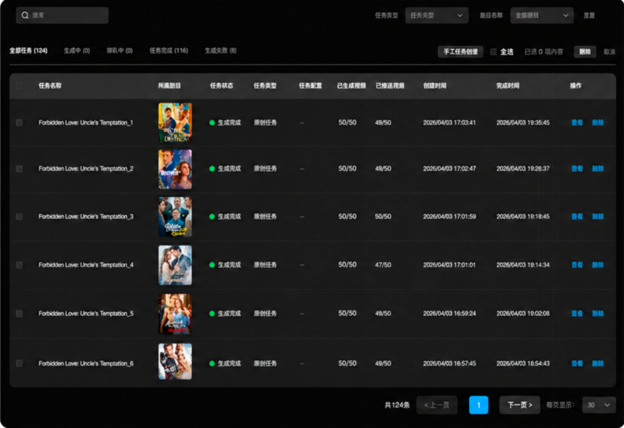
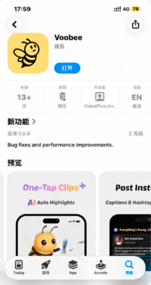

效果分佣
流量转化产生的收益分成
THE BUSINESS MODEL / 商业化必要性
消费频次较高、单位服务成本可控的产品。
模型调用成本明显、用户使用量差异较大的产品。
高频使用、价值持续且服务成本相对可控的产品。
结合订阅、用量额度、超额付费等方式，平衡用户体验与经营效率。
THE REAL-WORLD ANCHOR / 现实锚点结合
流量转化产生的收益分成
连接供给与需求，分享交易收益。
执行实际任务按照完成度付费
从为 AI 能力付费，到为 AI 创造的业务结果付费。
继续下滑，探索与业务结果结合的收费方式
SHORT DRAMA / 商业化案例

Agent 自动托管业务全流程，用户只需绑定 FB 账号后定期查看账户收益与提现。

VALIDATE EARLY / 商业化验证
THE BUSINESS VALUE / 商业化总结
商业模型决定 AI 产品能否持续经营，以及能否规模化创造价值。